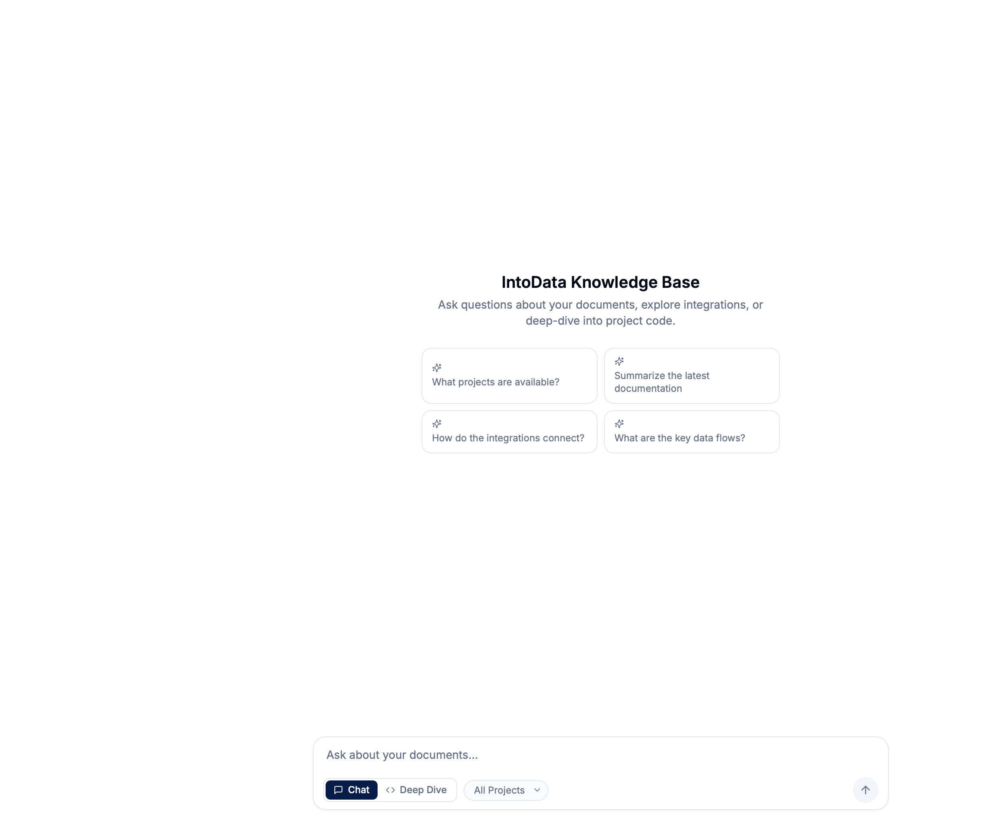
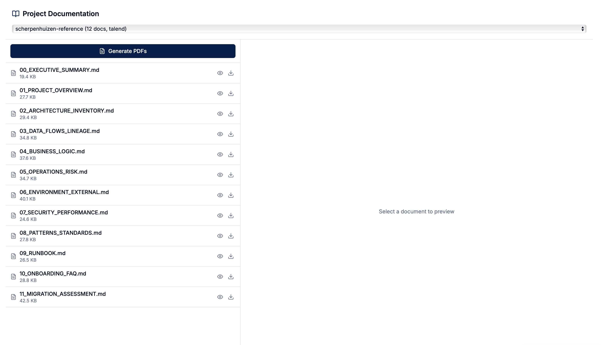
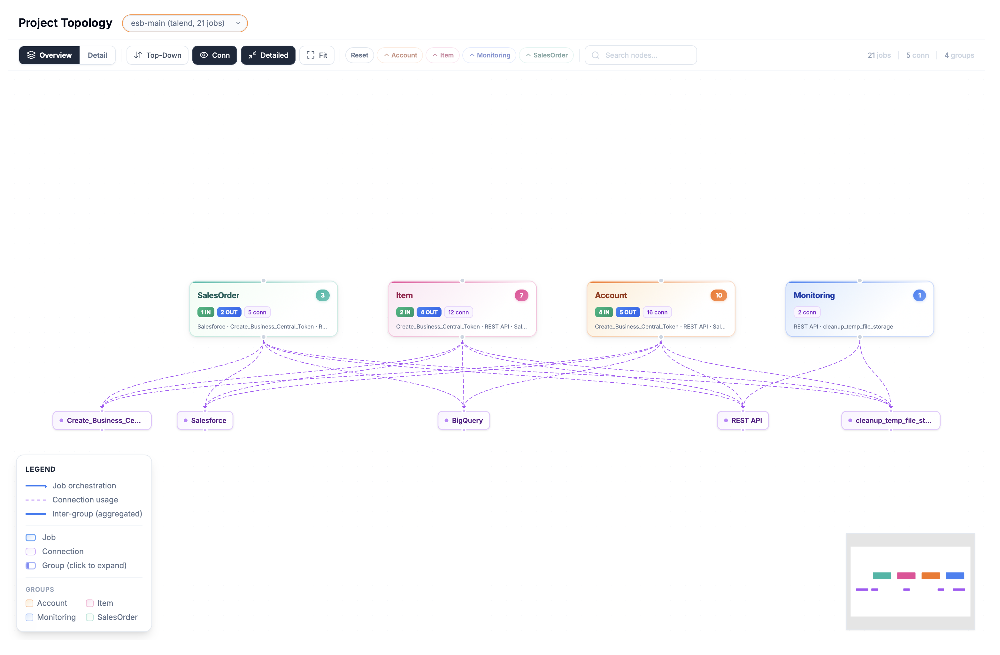
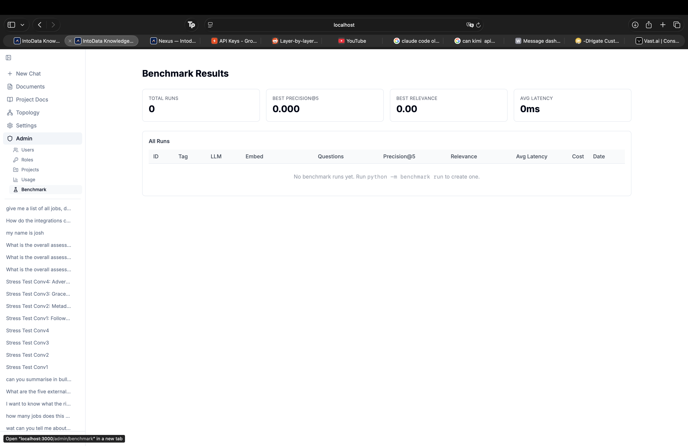
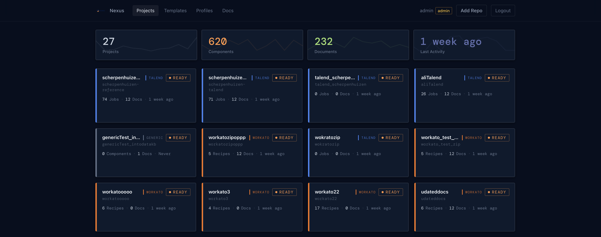
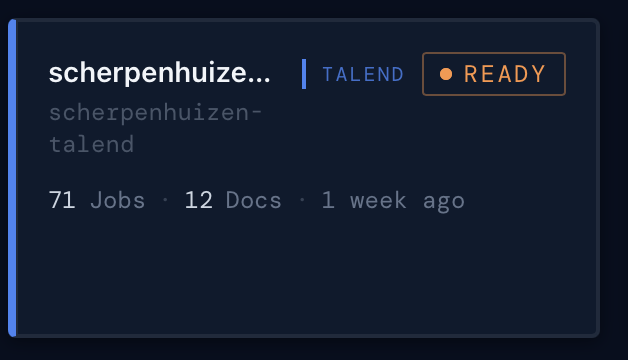

01 Inloggen
Wanneer je Nexus opent in je browser, kom je op het inlogscherm. Hier voer je je gebruikersnaam en wachtwoord in.
-
Open Nexus in je browser
Ga naar het adres dat je van je beheerder hebt gekregen (bijv.
https://nexus.jouwbedrijf.nl) -
Vul je gebruikersnaam en wachtwoord in
Wij voorzien een wachtwoord en admin-rol voor het domein van uw organisatie.
-
Klik op "Login"
Na succesvolle login word je doorgestuurd naar de Chat-pagina.
03 Chat
De Chat-pagina is de startpagina van Nexus en biedt een uniforme ervaring voor het stellen van vragen over je documenten. Je kunt schakelen tussen Chat-modus (snelle RAG-zoekopdrachten) en Deep Dive-modus (diepgaande projectanalyse) direct vanuit de invoerbalk.

Hoe gebruik je Chat?
-
Start een nieuw gesprek
Klik op "+ New Chat" in de zijbalk, of begin gewoon met typen in de invoerbalk op het welkomstscherm.
-
Kies een modus
In de invoerbalk onderaan zie je twee knoppen: Chat en Deep Dive.
- Chat — Snelle RAG-zoekopdracht. Het systeem vindt relevante stukken uit je documenten en genereert een antwoord.
- Deep Dive — Diepgaande analyse van een specifiek project. Gebruikt meer context en geeft uitgebreidere antwoorden.
-
Filter op project (optioneel)
Klik op de dropdown "All Projects" in de invoerbalk en selecteer een specifiek project om alleen daarbinnen te zoeken.
-
Stel je vraag
Typ een vraag in het tekstveld en druk op Enter of klik op de verzendknop. Je kunt ook op een van de suggestiekaarten op het welkomstscherm klikken om snel te starten. Voorbeelden:
- "Welke projecten zijn beschikbaar?"
- "Hoe zijn de integraties verbonden?"
- "Wat doet de job LoadCustomerData?"
-
Bekijk het live antwoord
Het antwoord wordt woord voor woord gestreamd. Bronverwijzingen verschijnen bij elk antwoord.
-
Stel vervolgvragen
Chat onthoudt je context. Je kunt vragen als "Kun je daar meer over vertellen?" of "En de connecties?"
-
Beheer je gesprekken
Je gespreksgeschiedenis verschijnt in de zijbalk onder de navigatie-items. Klik op een eerder gesprek om het te heropenen. Hover en klik op het prullenbak-icoon om een gesprek te verwijderen.
Chat vs. Deep Dive — Wanneer gebruik je wat?
💬 Chat
- Snelle vragen over alle documenten
- Onthoudt conversatie-context
- Snellere respons
- Ideaal voor opzoekvragen en algemene vragen
🔍 Deep Dive
- Diepgaande analyse van een specifiek project
- Gebruikt meer context voor gedetailleerde antwoorden
- Rijkere, uitgebreidere output
- Ideaal voor complexe, projectbrede analyses
04 Documents
Op de Documents-pagina upload en beheer je de bestanden die doorzoekbaar worden in Chat.

Document uploaden
-
Selecteer een project
Kies in de dropdown bovenaan het project waarvoor je het document wilt uploaden.
-
Upload je bestand
Sleep het bestand naar het uploadvak, of klik op het vak om een bestand te selecteren.
-
Automatische verwerking
Het systeem verwerkt je bestand automatisch: het wordt opgedeeld in stukken (chunks), omgezet naar vectoren, en is daarna direct doorzoekbaar.
Ondersteunde bestandsformaten
| Formaat | Beschrijving | Max. grootte |
|---|---|---|
| PDF-documenten | 50 MB | |
| DOCX | Microsoft Word | 50 MB |
| PPTX | Microsoft PowerPoint | 50 MB |
| XLSX | Microsoft Excel | 50 MB |
| MD | Markdown-bestanden | 50 MB |
Document Library
Onderaan de pagina zie je alle geUploade documenten. Per document zie je de bestandsnaam, het type, en het aantal chunks. Klik op het prullenbak-icoon om een document te verwijderen.
05 Project Docs
De Project Docs-pagina toont automatisch gegenereerde documentatie over je integratie-projecten. Deze documenten worden aangemaakt door het Nexus Dashboard.

-
Selecteer een project
Kies een project in de dropdown bovenaan. Je ziet het aantal docs (bijv. "12 docs").
-
Bekijk de documentenlijst
Je ziet alle gegenereerde documenten, genummerd van 00 tot 11, met hun bestandsgrootte.
-
Preview een document
Klik op het oog-icoon naast een document om het in het preview-paneel te bekijken.
-
Download als PDF
Klik op het download-icoon naast een document, of op "Generate PDFs" om alles te exporteren.
Beschikbare documenten
00_EXECUTIVE_SUMMARY.md
Samenvatting op managementniveau van het hele project
01_PROJECT_OVERVIEW.md
Algemeen overzicht: scope, componenten, statistieken
02_ARCHITECTURE_INVENTORY.md
Technische architectuur en volledige component-inventaris
03_DATA_FLOWS_LINEAGE.md
Datastromen, herkomst en afhankelijkheden tussen jobs
04_BUSINESS_LOGIC.md
Bedrijfslogica, transformatieregels en calculaties
05_OPERATIONS_RISK.md
Operationele risico's en aandachtspunten
06_ENVIRONMENT_EXTERNAL.md
Externe omgeving, afhankelijkheden en integraties
07_SECURITY_PERFORMANCE.md
Beveiliging, performance en compliance-aspecten
08_PATTERNS_STANDARDS.md
Codepatronen, standaarden en best practices
09_RUNBOOK.md
Operationeel handboek voor dagelijks beheer
10_ONBOARDING_FAQ.md
Veelgestelde vragen voor nieuwe teamleden
11_MIGRATION_ASSESSMENT.md
Migratie-beoordeling: risico's, complexiteit, aanbevelingen
06 Topology
De Topology-pagina biedt een interactieve visuele kaart van je projectstructuur. Het toont hoe jobs, connecties en groepen met elkaar samenhangen, waardoor je complexe integratie-projecten in een oogopslag kunt begrijpen.

Hoe gebruik je Topology?
-
Selecteer een project
Kies een project in de dropdown bovenaan. Je ziet het platformtype en het aantal jobs (bijv. "esb-main (talend, 21 jobs)").
-
Kies een weergavemodus
Gebruik de knoppen in de werkbalk om tussen weergaven te schakelen:
- Overview — Overzichtsweergave met groepen samengevouwen tot samenvattingsknopen
- Detail — Uitgevouwen weergave met individuele jobs binnen groepen
- Top-Down — Hierarchische layout van boven naar beneden
- Conn — Focus op connecties en hun relaties
-
Filter op groep
Klik op de gekleurde groep-chips in de werkbalk om specifieke groepen te tonen of te verbergen. Klik op "Reset" om alle groepen te tonen.
-
Zoek naar nodes
Gebruik de zoekbalk in de werkbalk om specifieke jobs of connecties op naam te vinden.
-
Interactie met nodes
Klik op een groep-node om deze uit te vouwen en individuele jobs te zien. Hover over nodes en verbindingen voor extra informatie.
-
Navigeer door de grafiek
Gebruik scrollen om te zoomen, slepen om te pannen, en klik op de Fit-knop om de hele grafiek in beeld te brengen. Een minimap rechtsonder helpt je orienteren in grote grafieken.
07 Settings & Admin
De Settings-pagina biedt systeemgezondheidsmonitoring, gebruiksanalyses en benchmarkresultaten. Het Admin-gedeelte (alleen voor admins) laat je gebruikers, rollen en projecten beheren.
Systeemgezondheid
De Settings-pagina toont de gezondheidsstatus van alle systeemcomponenten.
| Component | Wat wordt gecontroleerd? |
|---|---|
| Database (PostgreSQL) | Is de database bereikbaar en actief? |
| Qdrant | Is de vectordatabase online? |
| Ollama | Zijn de AI-modellen beschikbaar? |
| Versie | Welke versie van Nexus draait er? |
Gebruiksdashboard
Het Gebruiksdashboard (onder Admin > Usage) geeft een overzicht van platformgebruik en kosten.

| Metriek | Beschrijving |
|---|---|
| Total Queries | Aantal verwerkte queries in de geselecteerde periode |
| Input / Output Tokens | Tokengebruik over alle AI-interacties |
| Total Cost | Geschatte kosten van AI-modelgebruik |
| Active Users | Aantal unieke gebruikers in de periode |
| Overview / Per User | Schakel tussen totaaloverzicht en uitsplitsing per gebruiker |
Benchmarkresultaten
De Benchmark-pagina (onder Admin > Benchmark) toont de resultaten van RAG-kwaliteitsbenchmarks. Gebruik deze metrieken om je retrieval-pipeline te evalueren en af te stemmen.

| Metriek | Beschrijving |
|---|---|
| Precision@5 | Hoeveel van de top 5 opgehaalde chunks relevant zijn |
| Relevance | Totale relevantiescore van opgehaalde resultaten |
| Avg Latency | Gemiddelde responstijd voor queries |
| Cost | Kosten per benchmark-run |
docker-compose ps.
08 Nexus Dashboard
Het Nexus Dashboard is een apart beheersysteem waar projecten worden gescand en documentatie automatisch wordt gegenereerd. Het draait op een andere URL dan de Knowledge Base.

Wat zie je op het Dashboard?
Projects
Alle geregistreerde projecten met type (Talend/Workato), aantal jobs en documenten
Templates
Herbruikbare sjablonen die bepalen welke informatie in documentatie komt
Profiles
Combinaties van templates voor verschillende documentatie-stijlen
Docs
Gegenereerde documentatie per project bekijken en beheren
Projectkaart — Acties per project


Elke projectkaart toont de naam, het platformtype, de status, en het aantal jobs/docs. Onderaan vind je vier actieknoppen:
| Knop | Functie | Toelichting |
|---|---|---|
| ↻ Sync | Herlaad projectdata | Scant de broncode opnieuw en werkt de job-inventaris bij |
| Default ▾ | Profiel kiezen | Selecteer welk template-profiel voor de documentatie-generatie wordt gebruikt |
| 📄 Docs | Documentatie genereren | Start het AI-documentatieproces — genereert 12 Markdown-documenten |
| RAG | Naar Knowledge Base pushen | Duwt de gegenereerde documenten naar de RAG-database, zodat ze doorzoekbaar worden via Chat |
- Voeg een project toe via "Add Repo"
- Klik ↻ Sync om de broncode te scannen
- Kies een profiel (of gebruik "Default")
- Klik 📄 Docs om documentatie te genereren
- Klik RAG om de docs naar de Knowledge Base te pushen
- Ga naar de Knowledge Base en chat over je nieuwe documenten!
09 Architectuur
Nexus bestaat uit twee onafhankelijke systemen die samenwerken:
GEBRUIKER
|
+------------+------------+
v v
+-------------------+ +--------------------+
| Knowledge Base | | Nexus Dashboard |
| Next.js | | React |
| | | |
| - Chat | | - Projects |
| - Documents | | - Templates |
| - Project Docs | | - Profiles |
| - Topology | | - Doc Generatie |
+---------+---------+ +---------+----------+
| |
v v
+-------------------+ +--------------------+
| Backend API | | MCP Server |
| FastAPI | | REST + MCP |
+---------+---------+ +--------------------+
|
+---------+---------+----------+
v v v
+----------+ +-----------+ +---------+
|PostgreSQL| | Qdrant | | Ollama |
|Database | | Vector DB | |AI Models|
+----------+ +-----------+ +---------+
| Component | Wat doet het? |
|---|---|
| Knowledge Base (Next.js) | De web-app die je als gebruiker ziet — Chat, Documents, Project Docs, Topology |
| Nexus Dashboard (React) | Beheer van projecten, templates en documentatie-generatie |
| Backend API (FastAPI) | Verwerkt zoekopdrachten, document-ingestion, authenticatie en RBAC |
| MCP Server | Stuurt de AI-documentatiegeneratie aan met de custom harness en geconfigureerde provider |
| PostgreSQL | Slaat gebruikers, documenten, gesprekken en statistieken op |
| Qdrant | Vectordatabase — maakt het doorzoeken van documenten mogelijk |
| Ollama | Draait lokale AI-modellen voor embeddings en antwoorden |
10 Veelgestelde vragen
Hoe voeg ik een nieuw project toe?
Open het Nexus Dashboard, klik op "Add Repo", vul de projectnaam en het pad naar de broncode in, selecteer het platformtype (Talend, Workato, etc.) en klik op opslaan.
Waarom krijg ik geen resultaten?
Controleer of er documenten zijn geUpload voor het geselecteerde project. Probeer een andere formulering. Controleer of het juiste project is geselecteerd in de filter. Controleer of documenten zijn verwerkt (kijk op de Documents-pagina naar het aantal chunks).
Hoe maak ik documenten doorzoekbaar?
Er zijn twee manieren: (1) Handmatig: upload bestanden via de Documents-pagina, of (2) Automatisch: genereer documentatie via het Nexus Dashboard en klik op "RAG" om ze naar de Knowledge Base te pushen.
Kan ik documenten verwijderen?
Ja. Ga naar de Documents-pagina en klik op het prullenbak-icoon naast het document. Het document wordt verwijderd uit zowel de database als de vectordatabase.
Wat is het verschil tussen Chat en Deep Dive?
Chat zoekt snel door je documenten en geeft een beknopt antwoord. Deep Dive doet een uitgebreidere analyse en geeft een gedetailleerder antwoord, specifiek gericht op een project. Beide modi zijn beschikbaar vanuit de invoerbalk onderaan de Chat-pagina.
Wat is de Topology-pagina?
De Topology-pagina biedt een interactieve visuele kaart van je projectstructuur. Het toont jobs, connecties en groepen als nodes in een grafiek, met verbindingen die laten zien hoe ze met elkaar samenhangen. Je kunt schakelen tussen Overview, Detail, Top-Down en Connection-weergaven, filteren op groep en zoeken naar specifieke nodes.
Hoe reset ik mijn wachtwoord?
Neem contact op met een admin. Zij kunnen je wachtwoord resetten via Admin > Users.
Welke AI-modellen worden gebruikt?
Nexus gebruikt lokale modellen via Ollama: nomic-embed-text voor embeddings en gemma3:12b (of llama3.1:8b) voor het genereren van antwoorden. Er worden geen externe API's gebruikt — alle data blijft lokaal.